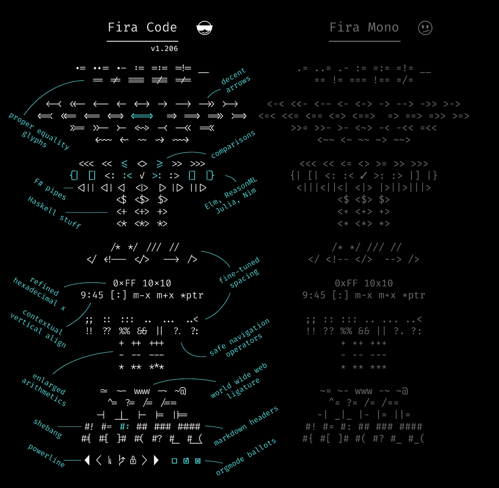
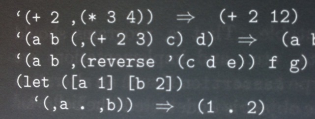

hell no
Ligatures in programming fonts—a misguided trend I was hoping would collapse under its own illogic. But it persists. Let me save you some time—
Ligatures in programming fonts are a terrible idea.
And not because I’m a purist or a grump. (Some days, but not today.) Programming code has special semantic considerations. Ligatures in programming fonts are likely to either misrepresent the meaning of the code, or cause miscues among readers. So in the end, even if they’re cute, the risk of error isn’t worth it.
First, what are ligatures? Ligatures are special characters in a font that combine two (or more) troublesome characters into one. For instance, in serifed text faces, the lowercase f often collides with the lowercase i and l. To fix this, the fi and fl are often combined into a single shape (what pros would call a glyph).
In this type designer’s opinion, a good ligature doesn’t draw attention to itself: it simply resolves whatever collision would’ve happened. Ideally, you don’t even notice it’s there. Conversely, this is why I loathe the Th ligature that is the default in many Adobe fonts: it resolves nothing, and always draws attention to itself.
Ligatures in programming fonts follow a similar idea. But instead of fixing the odd troublesome combination, well-intentioned amateur ligaturists are adding dozens of new & strange ligatures. For instance, these come from Fira Code, a heavily ligatured spinoff of the open-source Fira Mono.

So what’s the problem with programming ligatures?
They contradict Unicode. Unicode is a standardized system—used by all modern fonts—that identifies each character uniquely. This way, software programs don’t have to worry that things like the Greek letter
Δ(= uppercase Delta) might be stashed in some special place in the font. Instead, Unicode designates a unique name and number for each character, called a code point. If you have aΔin your font, you associate it with its designated Unicode code point, which is0x0394. In addition to alphabetic characters, Unicode assigns code points to thousands of symbols (including emoji).The problem? Many of the programming ligatures shown above are easily confused with existing Unicode symbols. Suppose you’re looking at a code fragment that uses Unicode characters and see the symbol
≠. Are you looking at a!=ligature that’s shaped like≠? Or the actual Unicode character0x2260, which also looks like≠? The ligature introduces an ambiguity that wasn’t there before.They’re guaranteed to be wrong sometimes. There are a lot of ways for a given sequence of characters, like
!=, to end up in a source file. Depending on context, it doesn’t always mean the same thing.The problem is that ligature substitution is
“dumb” in the sense that it only considers whether certain characters appear in a certain order. It’s not aware of the semantic context. Therefore, any global ligature substitution is guaranteed to be semantically wrong part of the time.
When we’re using a serifed text font in ordinary body text, we don’t have the same considerations. An fi ligature always means f followed by i. In that case, ligature substitution that ignores context doesn’t change the meaning.
Still, some typographic transformations in body text can be semantically wrong. For instance, foot and inch marks are often typed with the same characters as quotation marks. (See straight and curly quotes.) But whereas quotation marks want to be curly, foot and inch marks want to be straight (or slanted slightly to the upper right). So if we apply automatic smart (aka curly) quotes, we have to be careful not to capture foot and inch marks in the transformation.
Does that mean programmers can never have nice things? It’s totally fine to redesign individual characters to distinguish them from others. For instance, in Triplicate, I include a special
`$te_fl{1234*567~890} `$te_fl{1234*567~890}
But in this case, the point is disambiguation: we don’t want the lowercase l to look like the digit 1, nor the zero to look like a cap O. Whereas ligatures are going the opposite direction: making distinct characters appear to be others.
Bottom line: this isn’t a matter of taste. In programming code, every character in the file has a special semantic role to play. Therefore, any kind of
29 March 2019
Yes, I do a lot of programming.
“What do you mean, it’s not a matter of taste? I like using ligatures when I code.” Great! In so many ways, I don’t care what you do in private. Although I predict you will eventually burn yourself on this hot mess, my main concern is typography that faces other human beings. So if you’re preparing your code for others to read—whether on screen or on paper—skip the ligatures. Not least because you won’t even know when they go wrong. See trademark and copyright symbols for a related cautionary tale.One inspiration for this piece was the LaTeX crowd, who would routinely write me to insist their typography was infallible. And yet. I kept seeing LaTeX-prepared books that incorrectly substituted curly quotes for backticks. For instance, the example below is from Kent Dybvig, The Scheme Programming Language, 4th ed. In this chunk of Scheme code, the opening-quote marks are supposed to be backticks; the closing-quote mark is supposed to be a single straight quote:

“But code samples like these aren’t really ambiguous, because everyone knows that you don’t type the curly quotes.” A sloppy argument, though it may be true for languages that only accept ASCII input. But many of today’s programming languages (e.g., Racket) accept UTF-8 input. In that case, curly quotes can legitimately be part of the input stream. So ambiguity is a real possibility. Same problem with ligatures.The other inspiration for this piece were the people who repeatedly asked me when Triplicate would get ligatures, Powerline characters, and so on. Answer, as nicely as possible: never.